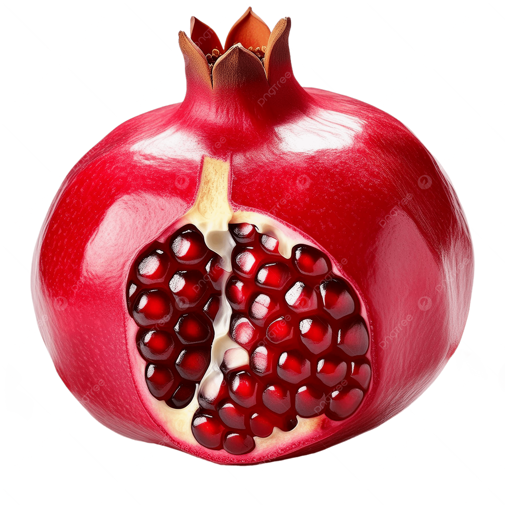

Sayat Nova was born in 1712 in Tiflis, into a family of Armenian artisans.
The city was then a bustling crossroads between Armenian, Georgian and Persian cultures.
From childhood, he grew up surrounded by interwoven languages, music, and traditions an exceptional breeding ground for the man who would become one of the greatest poets of the Caucasus.
He was taught to read sacred texts from a very young age, and he displayed a keen sensitivity to words and sounds.
